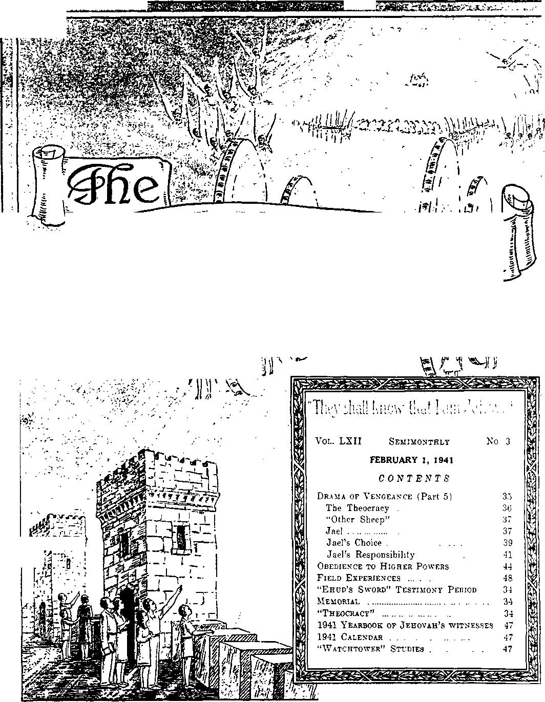

'I
U4
: ©WTB. &T5.
w/umaniif/m
JJY3 Aig Atf WW J AM ^PMsl-W
, < -». ~<y ,-p T T*SV’• ,'r'*5>«^'-‘*’ ”- ’ *■•■»'• — ---v » t»»-
to
Published Semimonthly By
WATCH TOWER BIBLE & TRACT SOCIETY 117 Adams Street - • Brooklyn, N.Y., U. S. A.
OFFICERS
J. F. Rutherford, President W, E. Van Amburgh, Secretary “And all thy children shall he taught of Jehovah; and great shall be the peace of thy children.” - Isaiah 54:13-
THE SCRIPTURES CLEARLY TEACH
THAT JEHOVAH is the only true God, is from everlasting to everlasting, the Maker of heaven and earth and the Giver of life to his creatures; that the Logos was the beginning of his creation, and his active agent in the creation of all things; that the Logos is now the Lord Jesus Christ In glory, clothed with all power In heaven and earth, and the Chief Executive Officer of Jehovah.
THAT GOD created the earth for man, created perfect man for the earth and placed him upon it; that man willfully disobeyed God’s law and was sentenced to death; that by reason of Adam's wrong act all men are born sinners and without the right to life.
THAT JESUS was made human, and the man Jesus suffered death in order to produce the ransom or redemptive price for obedient ones of mankind; that God raised up Jesus divine and exalted him to heaven above every creature and above every name and clothed him with all power and authority.
THAT JEHOVAH’S ORGANIZATION is a Theocracy called Zion, and that Christ Jesus Is the Chief Officer thereof and is the rightful King of the world; that the anointed and faithful followers of Christ Jesus are children of Zion, members of Jehovah’s organization, and are his witnesses whose duty and privilege It Is to testify to the supremacy of Jehovah, declare his purposes toward mankind as expressed in the Bible, and to bear the fruits of the kingdom before all who will hear.
THAT THE WORLD has ended, and the Lord Jesus Christ has been placed by Jehovah upon his throne of authority, has ousted Satan from heaven and is proceeding to the establishment of God’s kingdom on earth.
THAT THE RELIEF and blessings of the peoples of earth can come only by and through Jehovah’s kingdom under Christ, which has now begun; that the Lord’s next great act is the destruction of Satan’s organization and the establishment of righteousness in the earth, and that under the kingdom the people of good will that survive Armageddon shall carry out the divine mandate to “fill the earth” with a righteous race.
IJS MISSION
TglS journal Is published for the purpose of enabling the people to know Jehovah God and his purposes as expressed in the Bible. It publishes Bible Instruction specifically designed to aid Jehovah’s witnesses and all people of good will. It arranges systematic Bible study for its readers and the Society supplies other literature to aid in such studies. It publishes suitable material for radio broadcasting and for other means of public instruction in the Scriptures.
It adheres strictly to the Bible as authority for Its utterances. It is entirely free and separate from all religion, parties, sects or other worldly organizations. It is wholly and without reservation for the kingdom of Jehovah God under Christ his beloved King. It is not dogmatic, but invites careful and critical examination of its contents in the light of the Scriptures. It does not indulge in controversy, and its columns are not open to personalities.
Yearly Subscription Price
United States, >1.00; Canada and Miscellaneous Foreign, >150; Great Britain, Australasia, and South Africa, 6s. American remittances should be made by Postal or Express Money Order or by Bank Draft. Canadian, British, South African and Australasian remittances should be made direct to the respective branch offices. Remittances from countries other than those mentioned may be made to the Brooklyn office, but by International Postal Money Order only.
Foreign Offices
British ..................-.................. 34 Craven Terrace, London, W.2, England
Canadian.............................. 40 Irwin Avenue, Toronto 5, Ontario, Canada
Australasian.................... 7 Beresford Road, Strathfield, N. S. W., AustraUa
South African ________________________Boston House, Cepe Town, South Africa
Please address-the Society In every case.
(Translations of this journal appear <n several languages.!
All sincere students of the Bible who by reason of infirmity, poverty or adversity are unable to pay the subscription price may have The Watchtower free upon written application to the publishers, made once each year, stating the reason for so requesting it. We are glad to thus aid the needy, but the written application once each year Is required by the postal regulations. ’
Notice to Subscribers.- Acknowledgment of a new or a renewal subscription will be sent only when requested. Change of address, when requested, may be expected to appear on address label within one month A renewal blank (carrying notice of expiration) will be sent with the journal one month before the subscription expires.
Entered as second-class matter at the post office at Brooklyn, N. Y., under the Act of March S, 1879.
“EHUD’S SWORD” TESTIMONY PERIOD
This midwinter period of special activity will rim through the entire month of February. The title thereof calls attention to the zeal, energy and fearlessness with which Ehud used his dagger against King Eglon, and which qualities all publishers of The Theocracy will exercise likewise during this Period. February opens up this year’s three-month Watchtower campaign, and hence all publishers will specialize on securing subscriptions for The Watchtower and offering as a premium the book Religion and the new booklet Satisfied, all on a contribution of $1.00. Arrange now for this Testimony, and, if possible, attend the local company service meetings where this campaign is being discussed and organized. Write this office if you need references. To contribute toward making up the general report of the work and results thereof, please turn in your personal report of what you accomplish.
MEMORIAL
The Scripturally assigned date for the memorial celebration to both Jehovah’s name and the sacrifice of His provided Lamb, Christ Jesus, is Friday, April 11,1941, after six p.m. Each Christian company should therefore assemble after six p.m. of April 11, and the anointed ones celebrate the Memorial, and their companions, the Jonadabe, be present as observers. If there is no competent person present to deliver a brief discourse just before the partaking of the emblems, the short article “Memorial” as published in the Watchtower issue of March 15, 1939, should be read instead. Since the breaking of the bread and the drinking of the wine both picture the death of Jesus, it follows that both emblems should be served together at partaking, and not separately. The emblems should be unleavened bread and real red wine, to follou the example of Jesus and his apostles, who used real red wine m symbol of his blood. A report of the celebration should be promptly made to the Society, showing total attendance and number of partakers. In preparation for this 1941 celebration the article “Memorial” suggested above will be studied with profit
“THEOCRACY”
This new booklet by Judge Rutherford, in 64 pages, offers the clearest and best description yet of the world's leading issue today, “The Theocracy.” The visible operations of its representatives on earth are plainly set forth, together with the vicious opposition which they are encountering world-wide. A specially fine cover dignifies Theocracy, picturing in full-color illustration the judgment of the nations and the dividing of the people on this supreme (Continued on page 47)
Vol. LXII February 1, 1941 No. 3
PART 5
"What man is he that feareth the Lord? him shall he teach in the way that he shall choose. His soul shall dwell at ease: and his seed shall inherit the earth."—Ps. 25:12,13.
TEHOVAH does not arbitrarily compel any man I to take a specific course. God made man a free J creature with the privilege of choosing to obey the great Creator or to take an opposite course. That rule applied to Adam, the first man. It is the fixed rule of Jehovah, and he never changes. When Moses, the servant of Jehovah, addressed the Israelites on the plains of Moab, shortly before they were entering the land of promise, he delivered Jehovah’s message to them in these words: “I call heaven and earth to record this day against you, that I have set before you life and death, blessing and cursing; therefore choose life, that both thou and thy seed may live: that thou mayest love the Lord thy God, and that thou mayest obey his voice, and that thou mayest cleave unto him; for he is thy life, and the length of thy days; that thou mayest dwell in the land which the Lord sware unto thy fathers, to Abraham, to Isaac, and to Jacob, to give them.” (Deut. 30:19, 20) Such is the statement of the divine rule, from which Jehovah never deviates, and everyone who believes God can rely upon that rule.
2 The very opposite is the rule of Satan and all those who become servants of Satan. Since the time of the beginning of the first organization of Babylon till now Satan has put forth religion as his chief means of deceiving and controlling the people. He once getting human creatures under religious control, then man’s free choice is gone. The religious leaders plant dread in the minds of their religious followers and then compel or coerce the followers to obey the religious rulers. It was so with Nimrod, and the same is true with the Papal rule of today. All the arbitrary dictators are religious, and all persons under the dictatorial rule are compelled to obey the whim of the dictator, whether right or wrong. The nearer the government approaches the totalitarian state or condition, the less freedom is enjoyed by the citizen; and when the dictator becomes the absolute ruler, then the freedom of choice is gone completely. Satan’s purpose is to get man under his control and then lead mankind straightway into destruction.
This would be carrying out his challenge to Jehovah God. To this end Satan uses selfish men as leaders in religion and allied organizations that rule and control the people.
’ Jehovah’s purpose is to give men a full and fair opportunity to gain life by choosing the same or to choose the very opposite of life, which is extinction. Knowledge is required to make the choice, and God affords every opportunity for man to gain such knowledge. Jehovah furnishes the opportunity to man to know which is the right way. Satan and his religious agents keep men in the dark as to the true way and subtly lead them in the wrong way. God led the Israelites out of Egypt by the hand of Moses, and in this he was giving them an experimental education that they might freely choose either the way of life or the way of death. With those choosing, God was making prophetic pictures by which he emphasized the divine rule that men are free to choose the way of life or to walk in the way of death. When a man makes an intelligent choice to enter into a covenant with Jehovah God, thereby agreeing to do the will of God, he then enters upon the way of life, and from that time onward he must meet the requirements of God’s law if he would receive the blessings of life everlasting.
‘ In his own due time Jehovah sent his beloved Son to the earth to declare the truth and to make known to man the only means of receiving life everlasting. No man, however, was then compelled to accept Jehovah’s appointed way, but the same was offered to him freely. Mark well the words of the Scripture relating to the coming and sacrifice of Christ Jesus and the purpose thereof: “For God so loved the world, that he gave his only begotten Son, that whosoever believeth in him should not perish, but have everlasting life. For God sent not his Son into the world to condemn the world; but that the world through him might be saved.”—John 3:16,17.
5 In this text it is stated that man is given the choice of believing on the Lord Jesus Christ, if he would live and not perish. It follows, therefore, if he
does not believe he will perish. Man was already subject to death by reason of inheriting the result of Adam’s violation of God’s law, and now Jehovah was giving man an opportunity to choose to extricate himself from death by taking the side of the Lord Jesus Christ. If man does not choose to take that step, then what? That question is answered in the following scripture: “The Father loveth the Son, and hath given all things into his hand. He that be-lieveth on the Son hath everlasting life; and he that believeth not the Son shall not see life; but the wrath of God abideth on him.” (John 3:35,36) This is in harmony with the statement of the divine rule announced by Moses, in which Jehovah set before the Israelites life or death and permitted them to choose their way.
8 During the three and one-half years of the earthly ministry of Jesus he began to gather to himself those Israelites who voluntarily came to him and chose to be on his side. Later he opened the way to those Gentiles who took a similar step, that they might voluntarily come to him and live. Thus Jehovah authoritatively speaks through Christ Jesus, but at no time compels anyone to follow in the footsteps of Christ Jesus. On the contrary, Jesus says: “Come unto me, all ye that labour and are heavy laden, and I will give you rest. Take my yoke upon you, and learn of me; for I am meek and lowly in heart; and ye shall find rest unto your souls.”—Matt. 11: 28, 29.
T To those who seek to know the right way Jesus gives this advice: “Then said Jesus unto his disciples, If any man will come after me, let him deny himself, and take up his cross, and follow me. For whosoever will save his life shall lose it; and whosoever will lose his life for my sake shall find it.” (Matt. 16:24,25) Here he emphasizes that man is a free moral agent, free to exercise his will in choosing the way he should go.
THE THEOCRACY
8 Jesus was born a human, a man, and came into the earth, by the grace of Jehovah God, for the express purpose of qualifying as and to become King of The Theocratic Government. When Pilate inquired of Jesus: “Art thou a king?” Jesus answered, “I am. ... To this end was I born, and for this cause came I into the world, that I should bear witness unto the truth. Every one that is of the truth heareth my voice.” (John 18:37) Here Jesus emphatically declared that he is the King of Jehovah’s government; that Jehovah’s government stands for the truth which Jesus declared; and that all persons who are of the truth choose to put themselves under The Theocratic Government, that is, the kingdom of God under Christ Jesus, and which kingdom will be a complete vindication of Jehovah’s name.
• Jesus first gathered unto himself those persons who voluntarily chose to fully devote themselves, their life, and their all, to God and to his kingdom. The faithful apostles were the first ones who voluntarily became the disciples or followers of Christ Jesus. Since their day others have chosen to follow in the footsteps of Jesus Christ. No one has been compelled to take that step. Those who have chosen to follow in the footsteps of Jesus, and who continue faithful therein to their covenant, have chosen life, and not the way of death, which life is received as a gracious gift from Jehovah God by and through Christ Jesus. Jesus stated to his disciples and to his followers: ‘1 am the way, and the truth, and the life; no man cometh unto the Father but by me.” (John 14:6) “For the wages of sin is death; but the gift of God is eternal life, through Jesus Christ our Lord.”—Rom. 6: 23.
10 The ones thus chosen are the ones to whom the promise is given that they shall be of the kingdom of heaven and will reign with Christ Jesus in the spirit. The number of such is small when compared with that of the others who may ultimately receive life as perfect human-creatures. To those who have chosen to follow and obey Christ Jesus from the time of the apostles till the second coming of the Lord, and who have continued and do continue faithful unto death, these specific and precious promises are given: “Fear not, little flock; for it is your Father’s good pleasure to give you the kingdom.” (Luke 12: 32) “Fear none of those things which thou ahalt suffer; behold, the devil shall cast some of you into prison, that ye may be tried; and ye shall have tribulation ten days; be thou faithful unto death, and I will give thee a crown of life.”—Rev. 2:10.
11 Those faithful ones, together with Christ Jesus, constitute Jehovah’s royal house. Their choice of the right way was prophetically foretold and pictured by Joshua, a type of Christ, who at God’s command spoke to the Israelites, calling upon them to either choose to serve demons and be religious and die, or choose to serve Almighty God and live: “And if it seem evil unto you to serve the Lord, choose you this day whom ye will serve; whether the gods which your fathers served that were on the other side of the flood, or the gods of the Amorites, in whose land ye dwell; but as for me and my house, we will serve the Lord.”—Josh. 24:15.
12 The faithful men from Abel to John the Baptist, mentioned at Hebrews the eleventh chapter, shall constitute the “princes in all the earth”, under The Theocracy. (Ps. 45:16) Each one of them made his choice to serve Jehovah and wait for The Theocracy to be set up; and concerning them it is written: “These all died in faith, not having received the promises, but having 3een them afar off, and were persuaded of them, and embraced them, and confessed that they were strangers and pilgrims on the earth. For they that say such things declare plainly that they seek a country. And truly if they had been mindful of that country from whence they came out, they might have had opportunity to have returned: but now they desire a better country, that is, an heavenly [The Theocratic Government] ; wherefore God is not ashamed to be called their God; for he hath prepared for them a city [a symbol of an organized government, that is, The Theocracy] —Heb. 11:13-16.
15 The “little flock”, of which the apostle Paul is one, receive the better or higher position than the faithful men named above in Hebrews the 11th chapter, because the “little flock’ receive life as spirit creatures, whereas those faithful men mentioned are made princes and live on the earth for ever. “Instead of thy fathers shall be thy children, whom thou may-est make princes in all the earth.” (Ps. 45:16) “Behold, a king shall reign in righteousness, and princes shall rule in judgment.” (Isa. 32:1) Therefore the apostle Paul, under command of the Lord, wrote concerning those faithful men or princes who shall become visible governors the following: “And what shall I more say ? for the time would fail me to tell of Gedeon, and of Barak, and of Samson, and of Jephthae; of David also, and Samuel, and of the prophets; who through faith subdued kingdoms, wrought righteousness, obtained promises, stopped the mouths of lions.”—Heb. 11: 32, 33.
14 Today those who compose the remnant of the “little flock” have been selected after making a choice voluntarily to serve God. The greater number of those who will compose the “little flock” are now in heaven with the Lord, while only a small remnant await their instantaneous change from human organism to a spirit organism, or spirit creatures. (1 Thess. 4:17) “And as we have borne the image of the earthy, we shall also bear the image of the heavenly. Behold, I shew you a mystery: We shall not all sleep, but we shall all be changed, in a moment, in the twinkling of an eye, at the last trump; for the trumpet shall sound, and the dead shall be raised incorruptible, and we shall be changed.” (1 Cor. 15: 49, 51, 52) All of these chose life, joyfully obeyed the Lord, and receive life everlasting. Their eternity is spent in the spirit with Christ Jesus.
“OTHER SHEEP”
18 But Jehovah God provided long ago that under the King of The Theocracy there should be others who would receive life as human creatures and continue to live for ever on the earth, and who shall fill the earth with a righteous race. Concerning that other flock, symbolized by “sheep” because obedient, Jesus said: “And other sheep I have, which are not of this fold; them also I must bring, and they shall hear my voice; and there shall be one fold, and one shepherd.”—John 10:16.
18 The “other sheep” of the Lord are those who will compose the “great multitude” and serve before the throne continuously and for ever; as it is written: “After this I beheld, and, lo, a great multitude,"which no man could number, of all nations, and kindreds, and people, and tongues, stood before the throne, and before the Lamb, clothed with white robes, and palms in their hands. Therefore are they before the throne of God, and serve him day and night in his temple; and he that sitteth on the throne shall dwell among them."—Rev. 7: 9,15.
17 Those “other sheep” of the Lord, the “great multitude”, are the same sheep the Scriptures mention as “his sheep” at Matthew 25:32-46. Such persons are mentioned under the symbol of “sheep” because they love righteousness and hate iniquity, because they serve God and Christ, and receive the blessings of The Theocracy henceforth and forevermore.
18 The Lord Jesus, the great Judge, came to the temple of Jehpvah in 1918 and thereafter began the judgment of the nations. Since the beginning of that period of judgment, and until it ends, everyone who will be of the “great multitude” must choose to serve Jehovah God, the great Theocrat, and his King, Christ Jesus, and be faithful to The Theocracy and. doing so, shall receive life everlasting. Those who take the opposite course are designated as “goats”, or opponents of righteousness, and will be executed under the judgment written and go into destruction. (Matt. 25:45,46) The “great multitude” choose to serve Jehovah and his King of The Theocratic Government. In the great drama of vengeance, set out in the fourth chapter of Judges, and in which Barak-played the part representing Christ Jesus the King and the members of “his body”, and in which Deborah played the part picturing Jehovah’s capital organization, the spiritual class is clearly designated, as heretofore seen. Is there a part in that prophetic drama picturing the choice made by the “great multitude”? Even so, as the facts show.
JAEL
18 In this part of the prophetic drama here considered special instruction is given by the Lord to guide those persons of good-will who shall form the “great multitude”. It will be seen that they must choose the way that they will go, even as the faithful spirit class must choose. The first essential is to fear the Lord Jehovah God; and the promise is that He will teach such “the way that he shall choose”, and, choosing right and doing right, “his soul shall dwell at ease; and his seed shall inherit the earth.”—Ps. 25:12,13.
20 Jael was the wife of Heber the Kenite, who at all times, as it appears, had been friendly to the Israelites, God’s chosen people. (Judg. 4:17) That branch of the Kenites had in fact been with the Israelites and at the same time had been kind to the Canaanites, so far as the record shows. They were people of good-will and desired to see righteousness done. Jael, the wife of Heber, here plays the part picturing those persons of good-will who will form the “great multitude”. Why is Jael, the woman, here brought into the play, and little or nothing said about her husband, Heber? The organization of righteousness in all prophetic pictures is represented by a woman, even as Deborah played the part picturing Jehovah’s organization, of which Christ Jesus is the Head. The part in this drama played by Jael pictured those persons who join themselves to Jehovah’s organization by voluntarily putting themselves under the organization of Christ, and who find refuge, protection and life in this way.
21 The point in this part of the drama emphasizes the necessity of making a voluntary choice. In the preceding part of the drama it is observed that Jael saw Sisera, the captain of the Canaanite army, approaching her tent. She went out to meet him and invited him to turn in and permitted him to lie down on the floor of her tent to rest there, and she covered him with a mantle or some covering, for his comfort. “And he said unto her, Give me, I pray thee, a little water to drink; for I am thirsty: and she opened a bottle of milk, and gave him drink, and covered him.” —Judg. 4:19.
22 Sisera had seen the power of Jehovah God against him and his army, and he feared that Barak, God’s executioner, would find him and slay him. He was trying to escape and find a place of refuge until he could get back to his chief, who pictures the Devil himself. He had sought seclusion in the tent of a married woman, thinking the Israelites would not expect to find him there. He was like other cowards who do their wickedness and then flee and try to hide behind the skirts of a woman. He was looking after himself. His belly was his chief concern that he now sought. Self-preservation and self-comfort were uppermost in his mind. In this he pictured the religious leaders who claim to serve God, but who in fact serve the Devil, and concerning whom it is written, to wit: “Whose end is destruction, whose God is their belly, and whose glory is in their shame, who mind earthly things.”—Phil. 3:19.
23 Today the clergy require of the people of goodwill, who are friendly to them, to give them relief and refreshment and support and to obey their commands. At the same time those religious oppressors oppose those who serve God and all persons who try to do good and all those who show favors to Jehovah’s witnesses. Sisera was of the same mind. He was arrogant, scornful and cruel. The ones he pictured are the same.
24 Jael responded to the command of the mighty captain Sisera and opened and brought to him a bottle of milk and served him. That had the effect of soothing his nerves and satisfying his stomach that he might sleep. But Sisera was not satisfied yet, but must demand something more of the woman of goodwill before he would go to sleep: “Again he said unto her, Stand in the door of the tent, and it shall be, when any man doth come and inquire of thee, and say, Is there any man here? that thou shalt say, No.” —Judg. 4: 20.
25 After satisfying his appetite Sisera must go another step and demand a further guarantee for his safety. Sisera now played the part of those who do not hesitate to tell lies, but rather feed fat upon lying. In this he pictured leaders of religious organizations, particularly the Jesuits, and the Roman Catholic Hierarchy of Authority, and concerning which God caused to be written in the Scriptures showing that they say: “We have made lies our refuge, and under falsehood have we hid ourselves.” —Isa. 28:15.
28 Sisera had hid himself the best he could, and he was lying to fortify his security. Likewise today the Roman Catholic Hierarchy, having hid behind a mountain of lies, continue to lie about everything, and particularly about Jehovah’s witnesses, with the further hope of making themselves secure. Sisera’s lie was this: that he demanded Jael to stand in the door and watch and tell a deliberate lie if she was accosted by anyone looking for Sisera. Today the clergy of the Roman Catholic Hierarchy induce the so-called “American Legion” and other conscienceless Catholic dupes who love iniquity to commit wicked deeds for them and then lie about it.
27 How aptly that part of the drama fits modern times! Jehovah, by sending his message of truth amongst the people, has exposed the religionists, particularly the Hierarchy, to the gaze of honest people, making them appear in their proper light of wickedness. The announcement of Jehovah’s judgment against them, as written, greatly disturbs their religious equilibrium. The Hierarchy have no answer to the truth of God’s Word, and when the Scriptures are pointed out to them they are so confounded that they must resort to some other means of fighting back. "When Jehovah’s witnesses proclaim amongst the people the Scriptures, which tell of God’s purpose to destroy all the wicked at Armageddon and all their works, and then point out the wickedness to which the Hierarchy have resorted and been guilty of, such see that they must resort to further lies. Greatly desiring to escape the scathing rebuke which
Jehovah is giving them, the members of the Hierarchy demand of the people who are of their congregations, and of others whom they can influence, that the people take the side of the Hierarchy and tell all manner of lies against those who bear witness to the truth of God's kingdom under Christ. The Hierarchy members do this because they hope to escape exposure and to further continue their racket amongst the people, and to feed themselves fat and rule over the people in an arbitrary and harsh manner ; w?hich they do. The Hierarchy demand that those people of good-will speak in favor of the Hierarchy, regardless of the facts. They therefore seek the cooperation of all persons to tell lies about the people that serve God in spirit and in truth. For a long while the people of good-will have shielded these religious leaders, while at the same time they have observed such religious leaders wickedly persecuting the faithful servants of God. The time comes, however, when all persons must make their choice, either for or against the wicked. God’s judgment by Christ Jesus, the great Judge, nowT in progress, requires every one to make such a choice.
JAEL’S CHOICE
28 The test had now come to Jael, because she was playing a part in this drama picturing what is being fulfilled at the present time. For years she had observed the conduct of the Canaanite king Jabin and his chief officer, Sisera, and others, and noted that it was brutal towards God’s chosen people, the Israelites. She had seen the great wickedness committed by those enemies and was unable to prevent the same. Heber and other Kenite families friendly with him had held aloof from such persecutions and had tried to avoid openly taking sides. Jael had no doubt witnessed the “act of God” in sending the mighty storm and flood against the army of Jabin, which had destroyed that army and caused Sisera the captain to flee and seek refuge in her tent. She knew that Almighty God had taken a hand in this fight and was fighting the battle for his chosen people, the Israelites. She must now make her choice and, by telling lies, thereby further shield the wicked Sisera, or take her positive stand against wickedness and on the side of God’s people. In this she pictured that class of persons who for some years have observed the Hierarchy and their allies oppressing Jehovah’s witnesses and resorting to all manner of lies to cover up their wicked deeds and to hide the Hierarchy from view. A similar condition exists today. The people of good-will see that the Hierarchy are supporting the dictators of Europe who oppress the peoples and commit cold-blooded murder of women, children and other helpless persons. In Europe the Hierarchy are howling for the “corporate state” or dictatorial government. In America the Hierarchy take exactly an opposite course, for the purpose of deceiving the people; and while the members of the Hierarchy know that Jehovah’s witnesses and companions are the only people that are proclaiming God’s kingdom as the hope of mankind, the Hierarchy cause these faithful servants of God. to be arrested and persecuted and imprisoned under the charge of sedition, and the gravamen of the charge is that these Jehovah’s witnesses are advocating a government under Jehovah and therefore opposing the government of the United States.
22 Aptly Jael pictured what is now taking place as to choosing. She must choose. But what helped her to make a wise choice!
50 It was fear of Almighty God in her mind, fearing lest she should take her stand against the Almighty, the Righteous One, and the only One who gives life to those who do righteousness. Because she feared God, and not man, and because she put her trust in God, true to His promise he guided her to make the right choice: “What man is he that feareth the Lord V him shall he teach in the way that he shall choose. His soul shall dwell at ease; and his seed shall inherit the earth.”—Ps. 25:12,13.
81 Here Jael pictured the “other sheep” of the Lord who will compose the “great multitude”, who fear God, but who have no fear of men, whether those men be of the Hierarchy, the American Legion, or other gangsters. All such persons of good-will have the unfailing promise of Jehovah that he will teach them the right way, that they may choose right. Jael having chosen to throw in her lot with the people of Almighty God and trust Jehovah, from that point on in the drama she must play the part consistently with the course she had taken in her choice. “Then Jael, Heber’s wife, took a nail of the tent, and took an hammer in her hand, and went softly unto him, and smote the nail into his temples, and fastened it into the ground; for he was fast asleep, and weary: so he died.”—Judg. 4: 21.
82 The fact that Heber, Jael’s husband, had been friendly with Jabin and Captain Sisera did not at all deter Jael from doing her duty and making a wise choice. This may be presumed; but the real reason why she made a wise choice was that she was playing a part of the drama directed by Jehovah and it must be right in order to foretell the antitype. Jael chose to take her place on the side of Jehovah God, who gives victory to his people over his foes. She was, no doubt, convinced that Jehovah God had delivered the chief enemy of God’s people into her hand. Now to strike for God’s cause and freedom of his people, herself included, from the power of the oppressor, thus foreshadowing the quick and positive decision those of the “great multitude” must make by striking against demon-worship! Jael must act quickly before the executioner would arrive, who pictures Christ Jesus, God’s Executioner at Armageddon. If the executioner Barak arrived and found her harboring the enemy of Israel she would be subject to destruction. No doubt the angel of the Lord put all of this into her mind, necessary for her to take the right course. She acted promptly, playing the part which Almighty God had chosen or assigned to her.
88 Before her lay Sisera sleeping soundly, which he now could do because he considered that his religious and military standing would compel Jael to carry out his orders to watch and lie about his presence. A hammer and tent nail or tent pin were lying near by. Such were the only visible weapons at hand. Doubtless the Lord’s angel now put into her mind a conclusion to use that instrument and completely execute Israel’s mortal enemy. She went softly or quietly to the pallet of Sisera, where he lay, with her instrument of execution in hand. She knew the vulnerable spot of his head, and she drove the point of the tent pin clear through his temples and fastened Sisera’s head to the ground. Sisera’s thoughts perished. That was as Ehud did when his dagger, used against King Eglon, was shoved clear into his inwards and ended that oppressor; which pictured the same thing as the perishing of Sisera. So Jael used her hammer and tent pin with effect. In this manner Deborah describes her act: “She put her hand to the nail, and her right hand to the workmen’s hammer; and with the hammer she smote Sisera; she smote off his head, when she had pierced and stricken through his temples.” (Judg. 5:26) According to Young’s translation of this text, “she hammered Sisera, she smote his head, yea, she smote, and it passed through his" temple.”
34 The hammer and tent nail picture God’s Word of truth, which instrument is used effectively against religion. Thus it is written in the prophecies: “Is not my word like as a fire? saith the Lord; and like a hammer that breaketh the rock in pieces? Therefore, behold, I am against the prophets, saith the Lord, that steal my words every one from his neighbour.” —Jer. 23: 29, 30.
85 Further speaking of the prophets or preachers who falsely claim to represent Jehovah God and who thereby deceive, mislead and oppress the people, God says: “Behold, I am againstthem that prophesy false dreams, saith the Lord, and do tell them, and cause my people to err by their lies, and by their lightness; yet I sent them not, nor commanded them; therefore they shall not profit this people at all, saith the Lord.” —Jer. 23:32.
89 Members of the Hierarchy assume great authority and speak to the people; but the Lord says their end is near. This is further proof that the act of Jael was prophetic and that she was playing a part in the prophetic drama, which must have fulfillment in God’s due time.
8T Lovers of righteousness equipped with the “hammer” of God’s Word, which people of good-will are able to understand, meet the chief minds of religious champions and successfully beat down and kill their religion. They successfully stand up against the doctrines and traditions of religion. Furthermore, they go forth with the hammer-like message of truth, declaring the truth abroad, and that activity is destructive of demonism and the power of demons or demon religion over others. Another and similar picture is made by David in smiting the giant Goliath in the forehead with a stone from his sling; the same as persons of good-will must do in resisting religion and in taking their stand on the side of Jehovah God and Christ Jesus.”
88 “For he was fast asleep, and weary.” That was Sisera’s condition. He fell asleep because he thought he had fixed things safely for himself and now he could enjoy “peace and safety” and take his ease. The fulfillment of this part of the prophetic drama is now about to be enacted. The religious advocates, particularly the Roman Catholic Hierarchy, have so coached and trained many sincere and trustful people under them, and have so bound them with pledges and oaths against truth of and concerning Jehovah’s Theocracy, that the clergy have concluded that they have all such persons completely on their side and under their control, and that therefore they can proceed with their nefarious work; and they continue to do so in a scornful manner, scorning everything that is not submissive to them. Repeatedly in this day the evidence piles up that the Roman Catholic Hierarchy, acting as the chief agent on earth of Satan, have concluded that everything is coming their way and that within a very short time they will be entirely safe and at peace, enjoying themselves to their heart’s content. In Europe the Hierarchy boldly champion the cause of dictators, while in America the same men, relying upon their ability and cunning and influence and control over the people, speak against dictators and claim to be for democracy. Not one of them, however, is heard to advocate God’s kingdom under Christ which i& the great Theocracy.
88 The demons now have such control over the minds of the religionists that such religionists stop at nothing to put Jehovah’s witnesses out. Prominent members of the Hierarchy praise the American Legion in their “summary action” and punishment of Jehovah’s witnesses, and encourage and urge public officers to do the same thing. Soon the religionists will apparently have complete control of the nation, and then, as it is written in the Scriptures, they will say “Peace and safety !” That will be “the sign” which Jehovah will give, proving that his time has come to take drastic action against all blasphemers and all religious opponents of his Theocracy. In the prophetic drama here considered it is written, at this point, of Sisera, who pictured the religious leaders, that “so he died”. The fulfillment of that part of the prophetic drama is certain to be carried out on the opposers of Jehovah’s Theocratic Government.
JAEL'S RESPONSIBILITY
40 Concerning Jael’s act against Sisera it is written, in Judges 5:27: “At her feet he bowed, he fell, he lay down; at her feet he bowed, he fell; where he bowed there he fell down dead.” Was Jael guilty of the crime of murder? From the worldly viewpoint and the rules of war she was not. The chief enemy and oppressor of the people was in her hands, and she acted to protect herself and God’s chosen people. Religious commentators, however, look at her deed entirely from the human viewpoint and, themselves desiring to appear righteous and failing entirely to see the prophetic picture, vigorously accuse Jael of having committed a heinous-erime of cold-blooded, deliberate murder. In this they are entirely wrong.
41 Jael was playing a part in a divine drama. Without any doubt, Jael’s act was approved by Jehovah God; and this is shown by the prophecy of the Most High set out in Deborah’s song: “Blessed above women shall Jael the wife of Heber the Kenite be; blessed shall she be above women in the tent.”—-Judg. 5: 24.
42 This could not be understood and appreciated by one who does not have a vision of God’s purposes. But it can be understood and appreciated when it is kept in mind by the lovers of righteousness that Jael was there playing a part of the prophetic drama foretelling God’s purpose to destroy the enemy in some future time. Acting under the command of the Lord, she could not be guilty of a crime. Her act was entirely prophetic and carried out the purpose of Jehovah. The act of Jael, however, did not at all foretell that in the fulfillment of that part of the prophetic drama Christians should kill any human creature. The issue back there was between demons, the Devil being chief thereof, and Jehovah; that is, between religion or demon-worship and the obedience and worship of Jehovah God. The killing of Sisera pictured the destruction of religion, or demonism. Religious commentators may be excused for their position of harsh criticism against Jael. They do not see and therefore cannot appreciate the drama and its meaning, because they are in Jhe dark. If they had seen that there is a deadly conflict between the worship of devils and the worship of Almighty God, and that religion is on the Devil’s side and against God, the attitude of many of these commentators would doubtless have been different.
4S Today religion (and the advocates thereof) has become dead and a dead factor to the people of goodwill toward God. That was the condition of Sisera when the tent nail went through his temple. Such persons, who love righteousness and hate wickedness, are dead against religion now because religion is the product of Satan and leads to death, whereas the worship of Almighty God and Christ Jesus leads to life. Those people of good-will must choose between the Devil and Jehovah, therefore they must abandon religion and turn fully and completely to Christianity, if they would live. They must slay religion by taking a bold and uncompromising stand against religion, and by declaring to others that religion is a deadly enemy. That part in the drama played by Jael shows that all persons of good-will toward God, and who would find refuge and life, must take their uncompromising stand against religion, and hence, figuratively speaking, must slay religion so that from their viewpoint religion becomes completely dead. As.to the punishment of religious practitioners, the individuals, the Lord will attend to that. Human creatures have nothing to do with that. It is no part of man’s work who has devoted himself to the Lord to punish others because of their belief or practicing of religion. Their duty is to tell the truth. The sole duty of those who take the side of The Theocracy is to be servants of Jehovah God and inform the people that religion is a snare that leads them to death; even as God declared to his typical people: “And thou shalt consume all the people which the Lord thy God shall deliver thee; thine eye shall have no pity upon them; neither shalt thou serve their gods; /or that will be a snare unto thee." (Deut. 7:16) “And they served their idols; which were a snare unto them.”—Ps. 106: 36.
44 In the drama Jael had to immediately choose the Devil religion, represented by Sisera, or go along ■with Jehovah’s chosen people to whom Jehovah had given the victory in the battle just fought. So now at this day, those persons pictured by Jael, that is, the people of good-will toward Jehovah, must quickly choose to take their stand firmly on the side of Jehovah and his Theocratic Government under Christ Jesus. The crucial hour is here! Therefore to all persons comes the message this day: “Choose you this day whom ye will serve”; choose Jehovah God and his government, or Satan and his wickedness. There is no middle ground.—Josh. 24:15.
45 The woman Jael fitly pictured the organization of persons who choose to serve Jehovah God and his King, which is formed into an organization of the “great multitude”. They are the “other sheep” of the Lord Jesus Christ, gathered unto him, and who, according to his own words, are made a part of his fold. (John 10:16) Such will compose the earthly part of the Lord’s organization who serve him before his throne. They are not of the capital organization, however, but under it. Christ Jesus is the Lord and hence the Head over all of God’s organization. Such people of good-will flee to the Lord and put themselves under his capital organization until the end of Armageddon. Thereafter the “great multitude”, together with the faithful prophets named at Hebrews eleven, become the earthly part of the Lord’s organization. Such will be an organized body that will carry out on earth the will and commandments of the Lord. Jael fitly pictured such.
46 The fact that Jael had the approval of Jehovah God in what she did should be sufficient to satisfy every sincere person that she was not a criminal, but that she was the servant of Almighty God, playing a part in the prophetic drama, the meaning of which is now being revealed for the aid, comfort and hope of those who are under the test of standing firmly for Jehovah and his Theocracy. It is written in the prophecy concerning her: “Blessed shall she be above women in the tent.” The “great multitude’’ and the “princes” will be an organization that is blessed above all people on the earth, and the “great multitude” alone will be more blessed than others who shall get life. They together with the faithful prophets and others will carry out the purposes of Jehovah. The “great multitude”, as the Scriptures show, will fulfill the divine mandate to “multiply and fill the earth”. (Gen. 1:28; 9:1) That will be the most blessed privilege, to be used by the Lord to carry out his purpose which he long ago announced.
47 Jehovah’s way is perfect. (Ps. 18: 30) “The Lord is righteous in all his ways.” (Ps. 145:17) “The meek will he teach his way.” (Ps. 25: 9) The man who worships God in spirit and in truth, God ‘shall teach him the way he shall choose’. “The secret of the Lord is with them that fear him; and he will shew them his covenant.” (Ps. 25:14) But none of the practitioners of religion, because they are wicked, shall understand. (Dan. 12:10) These scriptures make clear the reason why the practitioners of religion cannot see and understand the purpose of Jehovah. God reveals a vision of his purpose only to those who unconditionally devote themselves to him and who avoid his enemies. Mark, then, how he has led and instructed his “other sheep” during the past few years and how the Lord is now feeding them.
48 In August 1,1932, issue of The Watchtower, and in the Vindication books published that year, Jehovah revealed to his people that King Jehu, who killed the Baal religionists in Israel, pictured Christ Jesus, Jehovah’s Executioner at Armageddon, and also that Jonadab the Rechabite, whose heart was with Jehu and against demon-worship or religion, there pictured the people of good-will who take their stand against demon or religious worship, and who will form the “great multitude”. Since the year 1936 the facts clearly show that great numbers of persons of good-will have forsaken religion and taken their stand on the side of God and Christ. It was in that year that God revealed to his people that all religion is a deceptive snare set by the Devil, in which many unsuspecting and credulous persons are caught. As the people of good-will have come to know the true description and purpose of religion, and that it is a deadly foe to Jehovah’s Theocracy under Christ, they have abandoned religion and put it to death, and have taken their stand unequivocally on the side of Jehovah and Christ. Thus it is seen that Jael played an important part in that prophetic drama, and which shows that every person today who would find refuge and safety and life must put himself on the side of Jehovah and his great Theocratic King, Christ Jesus. It is the kingdom for which Christ Jesus commanded all his servants to pray. (Matt. 6:10) Instead of praying for peace among the warring, religious nations today, as the president requests, all Christians should pray for the Kingdom as Christ Jesus instructed and that God’s will be done on earth as in heaven. Manifestly the universal prayers of all religionists offered for universal peace amongst the warring factions are not addressed to Jehovah, the Almighty God, but are addressed to the “god of this world”, that is, Satan, the Devil. At their prayers he laughs in scorn and goes on in his deeds of wickedness, and his blind dupes follow his lead.
48 “And, behold, as Barak pursued Sisera, Jael came out to meet him, and said unto him, Come, and I will shew thee the man whom thou seekest. And when he came into her tent, behold, Sisera lay dead, and the nail was in his temples.” (Judg. 4:22) At this point Barak pictured Christ Jesus as Jehovah’s Executioner at Armageddon. The Jael class the Lord, the Executioner, finds marked in their foreheads, and these he spares at Armageddon. The opponents of The Theocracy, who have refused the mark of intelligence when offered, the Executioner slays. (See Ezekiel 9:1-6.) As Barak pursued Sisera, picturing the chief representative of the Devil on earth, so the Lord begins his destructive work with the religionists, and this is pictured by Barak pursuing Sisera.
50 “Jael came out to meet” Barak. That showed her faith in Jehovah’s servant, picturing the faith of the “other sheep” of the Lord when they go out to meet the Lord and take their stand on his side. These people of good-will go out with gladness and meet the Lord and manifest their faith in him and show that they are in favor of The Theocracy. They know that Christ Jesus is out to pursue religion and to destroy it, and at heart they are right with him. To Barak Jael said: “Come, and I will shew thee the man whom thou seekest.” This is like the report of the man clothed with linen, with the writer’s inkhorn by his side, who went into the temple and reported to the Lord: “I have done as thou hast commanded me.” (Ezek. 9:11) These words of Jael were proof to Barak that Jael was fully on the side of the Israelites; and thus was pictured that those persons of good-will, the “other sheep” of the Lord, have taken their stand on the side with Christ Jesus, and that they are dead against religion and all forms of demon-worship.
51 Barak found Sisera dead in Jael’s tent. But he did not resent her action or claim the glory for himself. He was pleased with what Jael had done. In fulfillment of this part of the drama the Lord Jesus shows his pleasure and approval of those who take their stand on his side and who put to death religion so far as their hearts are concerned. The Lord Jesus begins the battle of Armageddon, and there religion meets its final end. He looks to see if the people of good-will are counted worthy to survive Armageddon ; and if they have fled from religion and killed it, so far as they are concerned, and have taken their firm stand on the side of Jehovah and his Theocratic Government, they may receive complete protection. Therefore religion has no power over those who will be of the “great multitude”.
52 “So God subdued on that day Jabin the king of Canaan before the children of Israel.” (Judg. 4: 23) Mark this: that the divine record gives all the glory and honor and praise to Jehovah for that deadly war in that battle where Barak and Deborah served. Likewise at the battle of Armageddon no follower of Christ Jesus on the earth will use physical force against any earthly government or organization and no Christian will have claim to or receive any honor and glory for the destruction of wicked rule. Christ Jesus, the Executioner of Jehovah’s purpose, together ■with his invisible army, will do the slaying, and therefore the Scriptures declare that God fights against all his enemies and that all his enemies “shall lick the dust”, that is, shall suffer destruction.
53 “And the hand of the children of Israel prospered, and prevailed [(margin) going, went, and was hard] against Jabin the king of Canaan, until they had destroyed Jabin king of Canaan.” (Judg. 4:24) They were hard on Jabin, because they destroyed Jabin and his army. This shows that after the visible part of Satan’s organization is destroyed at Armageddon there will still be a work which the Lord will do in destroying the host of wicked demons, the commander of which is Gog, and then will follow the annihilation of the Devil himself. Those wicked ones the Lord Jesus Christ will completely destroy. (Heb. 2:14) Thus will end wickedness on the earth for ever, and never again shall they spring up. (Nahum 1: 9) Jehovah’s righteous government shall prevail forever, and blessed will be those who have the favors of that government.
54 Why these perilous days ? Why is religion the chief instrument employed by the Devil to make war upon those who faithfully serve Jehovah God? Why are so many -wicked deeds committed by religionists today, against God’s servants? The Scriptures give plain answer. Long ago the Devil coveted the praise that creatures were giving to Jehovah God. (Jer. 51:13) The Devil set about to oppose Almighty God and to gain for himself that praise; and so it is recorded that the Devil said: “I will ascend into heaven, I will exalt my throne above the stars of God: . . . I will be like the Most High.” (Isa. 14:13,14) To accomplish that wicked and covetous purpose the Devil must gain support of creatures and receive their worship. That, being contrary to God’s will, was and is religion, because religion is doing anything contrary to God’s will. Satan induced many angels to follow him. Later he turned all the world, save only a few, into wickedness. Jehovah God, by the flood, wiped out those wicked ones on earth. Then the Devil organized religion with Nimrod as his visible representative, to receive worship and further religion. Since then religion has been constantly used by the Devil to deceive men, turn them away from God, turn them into wickedness, and cause them to worship anything except God and to commit divers wicked deeds. As further proof that worship is what the Devil desires he said to Jesus: ‘I will give thee all thedtingdoms [nations] of the earth if thou wilt fall down and worship me.’ (Matt. 4: 8, 9) Jesus refused that offer, and in hatred the Devil brought about the death of the Lord Jesus, and that he accomplished by using religion and his religious agents.
” In these days of supposed enlightenment, why are Jehovah’s witnesses so cruelly persecuted by those who are leaders in religion ? The reason is obvious. All persons who are wholly devoted to Jehovah God and Christ worship God in truth and in spirit, and for that reason the Devil hates them. The Devil knowing that the day of final reckoning is here, he brings every possible woe upon those who expose his chief weapon, religion, *and religious practitioners. (Rev. 12:12,17) Satan and his legion of demons control the minds of religionists, and therefore wickedness grows up and spreads over the earth like grass and all the lawless ones flourish. These do deeds against God’s servants, wholly disregarding the law of God and the law of man. The Devil is the chief one of the conspirators who causes these wicked deeds to be committed.
’’Why does Jehovah God permit the Devil to so persecute his true servants now! The answer from the Scriptures is this: To afford an opportunity to Christians to prove their faithfulness and integrity toward God and Christ; and to bring about a separation of the nations, that is, the “goats”, or wicked ones, from the Lord’s “other sheep”, who love righteousness-and desire to see God’s .will done on the earth.
” Knowing the end from the beginning, Jehovah God caused creatures long centuries ago to enact prophetic dramas foretelling the course the wicked would take and what would be their end, and how God would deal with them, and how he will avenge his people in the end. Chiefly, such prophetic dramas were recorded and are now made understandable by those who love God and his, kingdom that their faith might now be made strong, that they might receive comfort and increase their hope, and that they might remain immovable and on the side of God and prove that Satan’s challenge to Jehovah was false and extremely wicked. In this way the faithful have the opportunity of participating in the vindication of Jehovah’s name. They are thereby witnesses to declare the name and kingdom of Jehovah and by that means to enlighten the people of good-will that they may see and understand and choose the way to life.— Ps. 25:12,13.
88 The drama of vengeance is of great encouragement and comfort to the remnant and their companions now. Armageddon, the final settlement of accounts between God and the Devil, is about to talca place. Will God avenge his faithful people then! Jesus answers: “I tell you that he will avenge them speedily.” (Luke 18:8) Only the remnant and the Lord’s “other sheep” will believe and have faith in these promises.
” When will Jehovah put an end to wickedness in the earth! The Scriptures answer that at the time ‘when the wicked spring up like grass and the lawless flourish’. That is now, because never was there so much wickedness on earth; and that means that Armageddon is very near. (Ps. 92: 7, 8) And what will Jehovah God do to square the account for the wicked deeds the religionists have committed against those who love him! He will render vengeance to his adversaries and will be merciful to his people and deliver them.—Deut. 32:43.
60 Today religionists are committing innumerable wicked deeds against Jehovah’s witnesses and their companions. Such they could not do without the permission of Jehovah. God permits such only for a season, and during that season such persons of goodwill, those who love righteousness and hate wickedness, seeing their way clear to escape from religion, are led by the Lord to see and choose the way of life. It is therefore a great privilege to suffer for righteousness’ sake. That suffering will be for only a short season. God will soon fight for his faithful people. His drama of vengeance is now about to be fulfilled in completeness. All of God’s true people will now remain calm and firmly stand for The Theocracy. Deliverance is near! Next the victory song!
THE supreme power is Jehovah God, the great Theo-crat. The “higher powers” are Christ Jesus and Jehovah. The theocratic arrangement concerning the true church proceeds from Jehovah and by Christ. All in the church who are pleasing to Jehovah and to Christ Jesus must be willingly submissive or obedient to that divine and theocratic arrangement. There is no exception to this rule. “Let every person be submissive to the superior authorities.” (Rom. 13:1, Emphatic Diaglott) There is no conflict, of course, between the higher authority or power and the supreme power, because Christ and God are always exactly in harmony. (John 10:30) The twelve apostles of Christ may be embraced in the “superior authorities”, because they are superior to all others in the church, aside from Christ and Jehovah. The scripture at Romans 13:1 has long been applied by religionists to the worldly governments of this earth and to the powers thereof. It is manifest, however, that no such thought was in the apostle Paul’s mind when he wrote the words.
“Let every soul be subject unto the higher powers. For there is no power but of God: the powers that be are ordained of God. Whosoever therefore resisteth the power, resisteth the ordinance of God: and they that resist shall receive to themselves damnation.” (Rom. 13:1,2, Auth.
Ver.) Here “damnation” is translated from the Greek word krima and means “judgment”, and krima is so rendered in the Revised Version Bible; it is rendered “punishment” in the Emphatic Diaglott. In the foregoing text the arrangement or “ordinance” of God does not have reference to the ordinance or arrangement of worldly political powers of the nations. It is true that God has been neutral and not interfered with the nations of earth in their making of laws and enforcing them, but the responsibility for their so doing is not upon Jehovah. He has permitted it in that he has not prohibited it. Romans 13:2 speaks of God’s “ordinance”; therefore we must understand that only for such ordinance Jehovah assumes a responsibility.
In Paul’s day God was not judging the world, because Paul himself wrote that “God . . . hath appointed a day, in the which he will judge the world in righteousness” (when unrighteous governments will not exist), and that such judgment would be by Christ Jesus. (Acts 17:31; Rev. 20:4) Hence “judgment” as referred to by Paul at Romans 13: 2 must apply to the church, and that judgment must be by the power which God has ordained shall judge the church. “For the time is come that judgment must begin at the house of God: and if it first begin at us, what shall the end be of them that obey nqt the gospel of God?” (1 Pet. 4:17) Note Paul’s words to the Christians at Galatia : “I have confidence m you through the Lord, that ye will be none otherwise minded: but he that troubleth you shall bear his judgment [Zcriwia], whosoever he be.”— Gal. 5: 10.
If the “judgment” mentioned at Romans 13:2 is to be rendered and enforced by the powers of the governments of this world, then such judgment must be rendered and enforced by some man as the judge; and that is contrary to the Word of God, regardless of who the man is. No man in the church or outside of the church is authorized to judge one who is in the church. “Therefore thou art inexcusable, 0 man, whosoever thou' art that judgest; for wherein thou judgest another, thou condemnest thyself; for thou that judgest doest the same things. And thinkest thou this, 0 man, that judgest them which do such things, and doest the same, that thou shalt escape the judgment [/cnnia] of God?” (Rom. 2:1,3) Therefore we must conclude that, at Romans 13:2, the “judgment” is the judgment for which the Lord has arranged in his own theocratic organization and by the Head of that organization or by those whom the Lord has appointed to do so.
The substance of Paul’s statement at Romans 13:2 is this: That whosoever in the church resists the arrangement which God has made for the governing of his church is resisting God, and therefore shall receive punishment from God through Christ Jesus for so doing. Whether or not the worldly powers inflict punishment upon evil-doers often depends upon how much influence the one charged with the crime has with the one who does the judging. In God’s judgment there is no partiality. The text says, “Whosoever therefore resisteth,” and hence applies to every one, without any exception. This alone would confine the judgment to God’s theocratic organization by the authorities in God’s organization constituted to do judging.
Romans 13:3 continues: “For rulers are not a terror to good works, but to the evil. Wilt thou then not be afraid of the power? do that which is good, and thou shalt have praise of the same.” Who are the rulers here mentioned? The word “ruler” is translated from the Greek archoon, and is also translated “prince”. Satan is the chief ruler or the prince of this world. (John 12:31; 14:30) If the word “rulers” used by Paul at Romans 13 : 3 does not apply to the arrangement in the church, then the word must apply to Satan and his organization. Is Shtan, the prince of evil, or is any part of his organization a terror to evil workers m the church? Most assuredly not. If a man in the church does that which is evil and therefore against God’s organization, that is the very thing that Satan, the prince of this world, would have him do. Did not the rulers of the worldly Gentile powers induce members of the early church to do evil by joining alliance with the Devil’s organization? Instead of being punished by the Devil’s organization or worldly powers for so doing, they’were commended and exalted for so doing.
Furthermore, can it be said that the rulers of the present governments of earth “are not a terror to good works”? Fully consecrated witnesses of Jehovah God go about the country doing good by preaching the good news concerning God and his Theocratic Government by Christ Jesus, and the rulers of the worldly powers arrest, fine and imprison them for so doing good. Do faithful full-time publishers or pioneers, and company publishers, who go from door to door and from house to house and who thus do good by carrying the message of the Kingdom to the people of the earth, receive “praise” from the princes or rulers of this world’ No one ever heard of their receiving praise for so doing.
Also, when Paul says, “Wilt thou then not be afraid of the power?” can it be said that he meant that Jehovah’s witnesses are to fear the princes of this world and the rulers in the Devil’s organization? If that be true, then every one would refrain from being a witness to the glory of God. That is exactly what the Devil would want them to do As an illustration: In the far-away country of Liberia, Africa, one of God’s children who is the Society’s representative began to preach the gospel by word of mouth and by placing in the hands of the people there the printed books containing the gospel. The government informed him that he must desist, that he must circulate no books or pamphlets or literature, or give any public addresses, until such time as the ruling powers should grant a permit therefor. He went on anyway and placed in the hands of the people a great number of books. Had he obeyed the worldly powers, he would not have preached the gospel. He obeyed the Lord and was protected. He did good, but he received no praise from the worldly governors.
It is therefore apparent that Paul’s words mean this ‘You who are anointed with the spirit and thus commissioned of God to preach should fear the power (Christ the Judge); the rulers (Christ and those who act under II is direction) are not terrors to good works, but to evil, and if you do that which is good you will receive praise of that power (Christ, and those of his organization clothed with authority to praise).' One may ask: Are we to expect praise of the powers in the church for doing good? In answer to that question, and in proof that the apostles had authority to praise the doers of good and did praise them, and that the doers of good shall have praise, note 1 Corinthians 4 : 5 “Therefore judge nothing before the time, until the Lord come, who both will bring to light the hidden things of darkness, and will make manifest the counsels of the hearts: and then shall every man have praise of God.” 2 Corinthians 8:18: “And we have sent with him the brother, whose praise is in the gospel throughout all the churches.” 1 Corinthians 11:2: “Now I praise you, brethren, that ye remember me in all things, and keep the ordinances, as I delivered them to you."
When the members of the church come together for any purpose other than to do good, they do not receive praise; as the apostle stated: “Now in this that I declare unto you, I praise you not, that ye come together, not for the better, but for the worse.” (1 Cor. 11:17) It is therefore manifest from the scriptures above cited that the evil-doers receive judgment by God's arrangement, and that those who do good receive praise by the same arrangement.
Romans 13:4 continues: f‘For he [the power] is the minister of God [(Diaglott; Rotherham) he is God’s servant] to thee for good. But If thou do that which is evil, be afraid; for he [the power] beareth not the sword in vain: for he is the minister of God [God’s servant], a revenger to execute wrath upon him that doeth evil.” This text could have no reference to the power that the worldly powers execute. Surely God has not committed to Satan or anyone in Satan’s organization the power to act as God’s servant or minister for good in the church. Nor has he appointed any of that same wicked organization to act as avenger to execute wrath upon him that doeth evil in the church. What, then, do Paul’s words here mean?
The answer is, that the authority and order in the church is arranged by the Lord for good to those who are of the church, and for the judgment of those who do evil. (See 2 Corinthians 10:8; 13:10.) What is evil in the church is illustrated by the following scriptures: “But and if that evil servant shall say in his heart, My lord delayeth his coming; and shall begin to smite his fellowservants, and to eat and drink with the drunken; the lord of that servant . . . shall cut him asunder.” (Matt. 24: 4851) “Alexander the coppersmith did me much evil; the Lord reward him according to his works.” (2 Tim. 4:14) “For he that will love life, and see good days, let him refrain his tongue from evil, and his lips that they speak no guile: let him eschew evil, and do good, let him seek peace, and ensue it.”—1 Pet. 3:10,11.
The worldly powers use the sword to kill. If Romans 13: 4 is applied to them, then it means that such are clothed with power and authority over the Lord’s people to literally kill those who are in -the church, and that such are avengers of God. Jesus was charged with the evil of sedition, was unjustly judged and was killed. In so doing surely the Devil was not acting as God’s avenger there. Hence Paul’s words mean that the “sword” represents the power which God uses to punish those in the church who do evil, and who therefore do contrary to His law by which the church is governed. The creature (or creatures) whom God uses to exercise such power is the avenger to execute wrath upon the evil-doers. This does not mean that every individual in the church may punish at will one or many who he thinks may be doing evil. The Scriptures expressly prohibit a member of the church from so doing. (1 Thess. 4:6) The Lord did commit to others the power to judge and to execute judgment in certain cases. This power he committed to his apostles because they were his special representatives. Note 1 Corinthians 5:1-5; Acts 5:1-11 and 8:20-22. Christ Jesus and the apostles are the rulers in the church, and were already set at the time Paul wrote these words. None of these are a terror to good works; but that power which the Lord uses is a terror to evil works and bears not God’s punishing instrument (“sword”) in vain.
Romans 13:5 continues: “Wherefore ye must needs be subject, not only for wrath, but also for conscience sake.” God has not called his people to set them aside to be victims of his wrath. He called them to be his faithful witnesses and to receive salvation through Christ Jesus. (1 Thess. 5:9) But God’s wrath is visited upon those who are disobedient and who do evil. (Eph. 5: 5, 6) Let no one for a moment believe that God has appointed so-called “spiritual policemen” to avenge evil-doers in the church. Any punishment that results from anger or personal resentment is entirely wrong.—See Colossians 3:8; Matthew 5: 22.
Paul’s statement is that if one in the church does evil he shall suffer, and he should refrain from evil for that reason; but he should also for conscience’ sake refrain from evil or wrongdoing in the church. If he refrains from evil merely in order that he may escape punishment, his motive is not proper and unselfish. If he refrains from evil because he knows that it is right so to do, and pleasing to God for him to refrain from evil, then he does so because he loves God, and his motive is right and pure and he has a clear conscience. “Now the end of the commandment is love, from a pure heart, and a good conscience, and an undissembled faith.”—1 Tim. 1: 5, Diaglott.
Romans 13: 6 continues: “For this cause pay ye tribute also; for they are God’s ministers, attending continually upon this very thing.” The fact that the apostle speaks of paying taxes has been considered a strong argument and has been used to maintain that the entire chapter has reference to the worldly powers. That argument is unsound, and the conclusion is not warranted. For the purpose of comparison note the rendering of this text by different translators: “For because of this are ye paying tribute also.” (Rotherham) “For the same reason as you pay taxes.” (Moffatt) “Why, this is really the reason you pay taxes also.” (Weymouth) “For on this account also you pay taxes.”—Diaglott.
The apostle does not command the payment of taxes or customs to anybody in the church. The epistle was addressed to those Christians who had once been Jews. (See Romans 7:1.) They were familiar with the law of the Jews requiring the payment of a poll tax and other taxes imposed for the support of Israel’s government. (Ex. 30:11,13) They would understand and did understand that the payment of taxes was a proper thing to do. When Paul wrote to them those Christians were residing in Rome and were paying taxes to the Roman government because not wishing to incur the wrath of Rome, and also for the sake of their own conscience, knowing that they were doing right. ‘For this cause,’ says the apostle, ‘you pay taxes; and moved by the same good reason you should render your dues to Jehovah.’ The words of Romans 13: 6, ‘For this cause you pay taxes also,’ appear to be a parenthetical statement and put in merely to strengthen the force of the apostle’s argument. For what cause do you pay taxes? For conscience’ sake; for the reason that it is right to pay for what service you receive.
Then reverting back to the rulers in the church he says: “For they are God’s ministers [servants; not Satan’s servants, which they would be if the officials of earthly governments were meant].” Who, then, are God’s “ministers” (leitourgoi—Greek) ? The same Greek word is translated minister (ministers) at Hebrews 1:7; 8:1, 2, 6 ; 9: 21; 10:11; Acts 13:2; Romans 15:16; Philippians 2:17, 25; which texts prove beyond all doubt that they are God’s anointed ministers ministering in and for the church. Then adds the apostle: ‘These ministers of God are attending upon this very thing.’ Thereby he clearly means that the office of such ministers is to maintain order and authority in the church. His argument is, then, that there might be order and peace, and for conscience’ sake the laws of the land should be obeyed where they do not conflict with God’s law.
Remans 13:7 continues: “Render therefore to all [whether inside the church or outside thereof] their dues: tribute to whom tribute is due; custom to whom custom; fear to whom fear; honour to whom honour.” The words “tribute” and “custom” both refer to a commercial or financial obligation which the government may lay upon those who reside thereunder to meet the governmental expenses. Jesus and his disciples paid such tax. In reply to the question as to whether or not it was proper to pay taxes to the Roman government Jesus said: “Render therefore unto Cassar the things which are Caesar’s, and unto God the things that are God’s.”—Matt. 22:18-21.
But what does the apostle mean when he says, at Romans 13:7: “Fear to whom fear” is due? Does he mean that it is the will of God that the Christian is to stand in awe or fear of the appointed servants of the church? Religious clergy, “elective elders,” and others of congregations have used this scripture as an authority for demanding that reverence and fear be given to them by the congregation. Such application of the text is wrong. Whom, then, do the members of the church properly fear? Ephesians 5:21 answers: “Submitting yourselves one to another in the fear of God.” 1 Peter 2:17,18: “Be respectful to all; love the brotherhood ; fear God; honor the King. Let household servants be subject with all fear to their masters; not only to the good and gentle, but also to the perverse.” (Diaglott) 1 Peter 3:14,15: “But even if you suffer on account of righteousness, you are blessed. And fear not with their fear, nor be alarmed; but sanctify the anointed Lord in your hearts, and be always prepared with a defense for every one demanding an account of the hope that is in you; but with meekness and fear.” (Diaglott) “Sanctify the Lord of hosts himself; and let him be your fear, and let him be your dread.”—Isa. 8:13.
The Christian is not to fear man. “The fear of man bringeth a snare; but whoso putteth his trust in Jehovah shall be safe.” (Prov. 29:25, Am. Rev. Ver.) It is entirely Scriptural, and therefore right, for Christians to show respect for one another in the church, because the Lord has set the members there. Those who follow a selfish course and who “despise government" the Lord will punish. (2 Pet. 2:10; Jude 8) “All men should honour the Son [Christ], even as they honour the Father [the Supreme Power].”— John 5 : 22, 23.
The apostle continues (Rom. 13:9): “For this, Thou shalt not commit adultery, Thou shalt not kill, Thou shalt
(Continued from page 34) issue and their ultimate destiny. Get your copy now, on a contribution of 5c, and study it preparatory to its general distribution shortly as elsewhere announced.
1*41 YEARBOOK OF JEHOVAH’S WITNESSES
In the face of an almost impossible year the publication of the 1941 Yearbook of Jehovah’s witnesses represents an accomplishment made possible only by Jehovah’s power. Confirmation of this you will find when you read the comprehensive report, as written by the Society’s president, covering the world-wide activities of Jehovah’s witnesses, under continuous ehemy fire, during the past service year. Besides this amazing report the Yearbook also offers the president’s comment on the 1941 yeartext and a text with a Watchtower comment thereon for each day of the new year. The edition of the Yearbook is always limited, thus enhancing the costs involved; hence a contribution of 50c per copy is stipulated therefor. Organized companies should combine the orders of all individuals therefor and send such through the company servant. not steal, Thou shalt not bear false witness, Thou shalt not covet; and if there be any other commandment, it is briefly comprehended in this saying, namely, Thou shalt love thy neighbour as thyself.” When the apostle says “For this", the question may properly be asked, For what cause? The answer is, Because of love, thou shalt not commit adultery, kill, steal, bear false witness or covet. The things here mentioned which the Christian is not to do are crimes against the law of God. It is true that in most of the Gentile nations these same things are denounced by the law as wrong. If, however, a Christian would refrain from committing the crimes here mentioned merely because the law of the land would punish and does punish those who commit such crimes, then the Christian’s motive is wrong.
What would induce any person to commit the crime of adultery, murder, theft or perjury? Selfishness, of course; and selfishness is the very opposite of love. If the person loves God and his fellow man he will not commit these wrongs. If he loves his neighbor he will do no injury to his neighbor. It is to satisfy some selfish or wrongful desire that leads men to do these wrongful acts. If a man loves his neighbor as himself he will be unselfish toward his neighbor and therefore will not willfully do any wrong against his neighbor. For this reason the Christian obeys every law of the land that is in harmony with God’s law. lie does not obey merely because it is the Jaw of the land, but because to obey is right.
Continues verse 10: “Love worketh no ill to his neighbour; therefore love is the fulfilling of the law.” In this verse the apostle could not have been referring to the laws of the Gentiles or so-called “Christian” nations, for the reason that not all of the laws of the nations could be fulfilled by one who is prompted wholly by love. If a nation commands that a man shall not hand to his neighbor, who is sick and suffering, a glass <of wine which would relieve him, love could not fulfill that law. But every law of God is fulfilled by love or complete unselfishness because all the laws of God are right. Every law of every nation of earth that is in harmony with God’s law should be gladly obeyed by the Christian whether he be a citizen of that nation or not. But where the law of the nation or government is contrary to God’s law, then there is no compromise by the Christian: he must obey the law of God. If he does obey the law of God he will do no wrong or injury.
1941 CALENDAR
The 1941 Calendar is exceptionally beautiful and expressive. Under the yeartext, to wit, “Salvation unto our God . . . and unto the Lamb” (Rev. 7:10, A.R.F.), the artist portrays with Scriptural symbolisms and modern details Jehovah’s “strange work” of judgment now fast reaching its climax among all nations The Calendar date pads mark the special testimony periods for 1941, and also give field service suggestions for the intervening months. A contribution of 25c per copy is asked therefor, or $1 00 for five copies mailed to one address. Companies do well to send in combination orders through the local company servant.
“WATCHTOWER” STUDIES
Week of March 2: “Drama of Vengeance” (Part 5), ?[ 1-28 inclusive, The Watchtower February 1, 1941.
Week of March 9: “Drama of Vengeance” (Part 5), [[ 29-60 inclusive, The Watchtower February 1, 1941.
PRESERVATION OF FAITHFUL IN BRITAIN
“I live on the Thames estuary, where air raids and air fights are the order of the day and the night. It has been immeasurably worth while going through these experiences in order to know the inviolable safety Jehovah commissions his angels to wrap us round with when bombs and shells are dropping. ‘The angel of the Lord encampeth about them that fear him.’ ‘I will never leave thee nor forsake thee.’ These and others of his lovely promises he gives us and fulfills for us, and we know it and are steady in our place of safety. It is wonderful to always be in that— wherever we go, it goes. We find the people more ready to listen to the Kingdom message and take the literature. I think most of us go to bed as in normal times, knowing that if the Lord saw an urgent need for us at any time to do something different, the angels would move us to do it. When on the work we often forget a raid is on until the noise gets nearer and louder, and only when shells or worse are overhead do we take cover until it has passed over.”
BELFAST THEOCRATIC CONVENTION, OCT. 26, 27.
“Pavement witnessing was arranged for 2:30 p.m., Saturday, in which 36 publishers took part. This number was made up from Belfast publishers and the pioneers. A service meeting was held at Kingdom Hall at 7:30 p.m., by which time all the pioneers in Ireland were present, and there was a total attendance of 56. Following this the chairman gave extracts from The Messenger. At this riloment the ‘Alert!’ signal was suddenly sounded by the air-raid sirens. This was something new to the witnesses, for only once before had this signal been given in this city, and that was on the night previous. A little excitement was caused, but the conventioners settled down immediately when told not to worry over that, and the meeting went on without a break. Sunday morning the publishers assembled at Carlton Hall, at 9:30. Many of these were for immersion. This meeting was well conducted, and one person who did not come prepared to take this step decided to do so at the service. There were 16 Jonadabs immersed, 10 men and 6 women. Between 8,000 and 10,000 announcement folders had been reserved for actual convention distribution, and so it was necessary for the publishers to concentrate on the advertising work. The total report for the convention was as follows: 58 publishers, 2 books, 32 booklets, 164 hours, 40 magazines, 133 sound attendance. The following companies were represented: Belfast, Ballymena, Coleraine, Londonderry, Cookstown, Portadown, Lisburn and Dublin. At the afternoon meeting 115 brethren were in attendance. The greetings from Judge Rutherford were read to the convention and everyone present enthusiastically supported the suggestion that the following message be sent him: ‘Belfast Theocratic Conventioners send loving greetings. Jehovah directed safe arrival of [convention lecture] records. Most thrilling lecture ever heard. Wonderful reproduction. Public applaud many remarks. Irish brethren stand united with you for Theocratic victory.’ This was telegraphed to Brooklyn immediately following the public lecture. There was seating for 230 people at this lime, but this had to be increased to 250 before 3:30 p.m., and every seat was occupied. The number of strangers present was 133. The majority of these had come as a result of the special letter to the people of good-will. It is hard to describe the effect that the lecture had upon the public. The favorable comments about England brought instant applause from the public. Reproduction was wonderful and every word came through clearly. The friends also paid close attention to the reading of Judge Rutherford’s lecture ‘The End’, giving serious attention to the important matter presented by him. There were many points that the pioneers wanted discussed, and so it was arranged to hold a pioneer meeting on Monday 28th at Kingdom Hall, at 10: 30 a.m. Every pioneer in Ireland attended this meeting.”
IN CORASAL, BRITISH HONDURAS
“A priest greeted us at the door and told us he came to visit the occupants of the home. Who were we? ‘Jehovah’s witnesses!’ Immediately his color changed, with a big ‘Hoo-oo!’ Then he spoke to my brother, but I proceeded to the inmates to offer the lecture ‘Purgatory’. While I was opening the phonograph the priest re-entered and said I could not go around and enlighten the people in this manner, and to come and speak with him. I replied I was not visiting him, but the home. The master of the home said to me then to come tomorrow and give him the lecture. I left and went to another home. There I was received with pleasure, but I expressed that if their home were ruled by the priest I would not play the lecture. A bolt reply came: ‘I am the master of my home.’ While we were playing, the priest came and made a signal calling the master and spoke to him in secret. The master spoke loudly then, saying that what we are hearing will not interfere with us, and to keep on playing that record. We played the other side of the record, on ‘Resurrection’, and left and went to another home, which the priest could not enter, and played two lectures. On our way home he began to trail us and saying to the people that we are Satan the Devil. We played him a hide-and-seek game, but he continued trailing us Then we went to the police station and reported his actions. We had our meeting staged for that night, but, on reaching home, were informed that the Roman Catholic Legion were prepared to lash US and drive us out of town. We notified the police. Our meeting was held without any disturbance. We had an overwhelming audience When we closed all the people of good-will crowded forward, giving us thanks, also telling us the captain of the Legion was there but was powerless to act, for his companions deceived him, fearing further trouble. The protection of the Lord was marvelous in our eyes, and next morning we found the people awaiting us with much joy and their homes open."
HEARING EARS IN “HOBO PARK” (NEBRASKA)
“When carrying the petition I went to ‘Hobo Park’. Very few refused to sign it. A good witness resulted. Later instructions said we were to make back-calls on all signers. The addresses given were all over the U. S., so back-calling did not sound easy. As the men in the park change rapidly I covered it three times with booklets. I received invitations to make speeches. I picked up my phonograph and played for four hours steady to sixty listeners, going from group to group. Sunday following I did this over again. One group of Indians were good listeners, and asked good questions. Very few in the park refused to listen.”
48